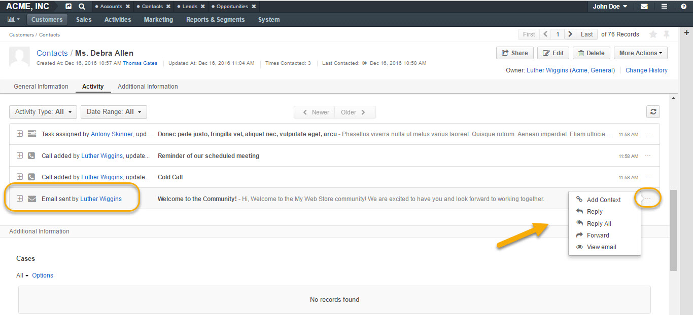
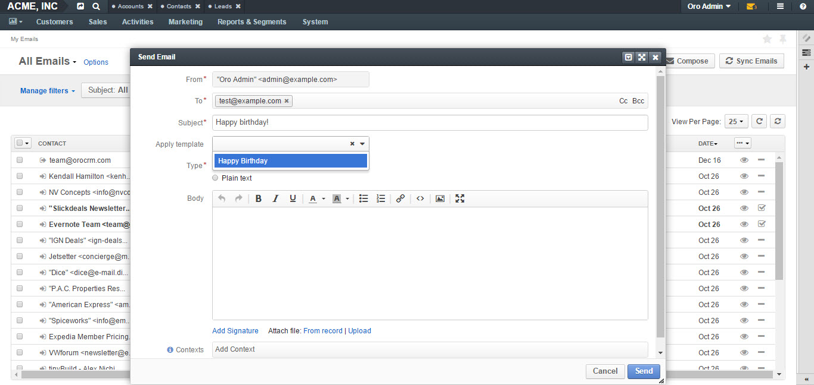
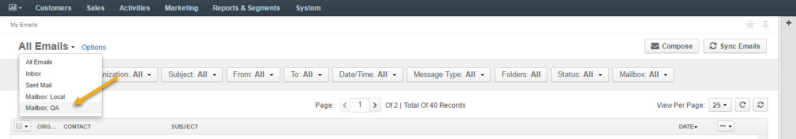
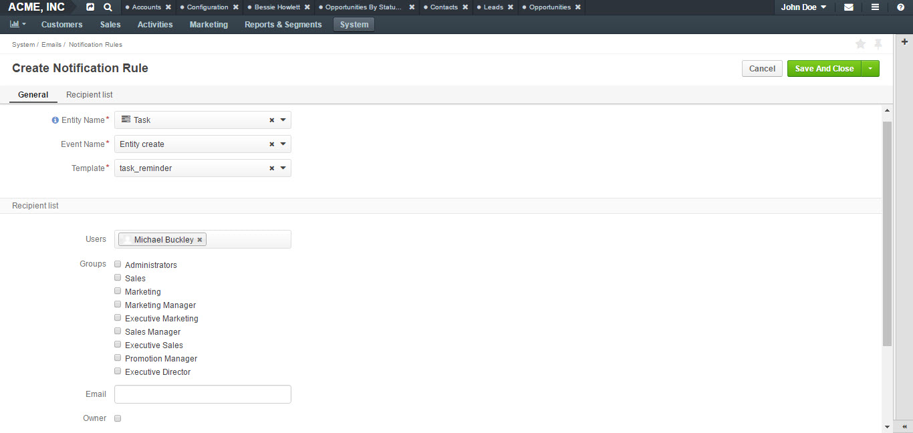
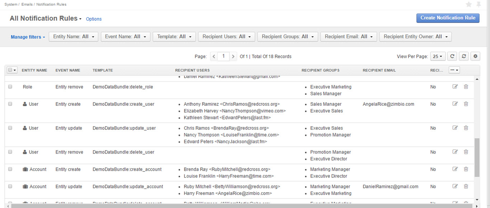

Emails are essential for conducting day-to-day business activities and communicating with co-workers or customers.
In this email guide, you will learn:
You can reach your emails in a number of ways, via:
For the description, see ref:My Emails Page <doc-my-oro-emails>.
For the description, see Recent Emails Widget.
All the emails sent to a record are displayed in and can be reached from the Activity section of the record’s page.
Clicking on the ellipsis menu of a record will launch the following action list for an email:
The signature may be added to any email you write in OroCRM. Your organization settings define whether the signature will be added automatically or manually.
To add a signature manually or modify a signature:
| Field | Description |
|---|---|
| Signature Content | Specify the text and formatting of your signature (by default, the email signature body is empty). |
| Append Signature To Email Body | Defines whether a signature is added automatically or manually. |
With OroCRM, you can create email templates and use them to send numerous personalized emails. This way, for instance, you can create a single template with birthday wishes and assign it to an email campaign, so each of the subscribers with a birthday on a specific day would get a personalized email with congratulations.
To create an email template:
| Field | Description |
|---|---|
| Owner | Limits the list of users who can manage the template, subject to access permissions. |
| Template name | A name used to refer to the template in the system. |
| Type | Use HTML or plain text. |
| Entity name | Choose an entity the template is related to or keep it empty if the template is not related to any entity. If you want to use the template for autoresponses, the entity name value should be set to Email. |
The following actions are available for an email template from the list:
Note
If you want to track the user-activity related to the emails sent within the email campaign, add a piece of a tracking website code to the email template.
To apply an email template to a new email: select the template from the drop-down of the Apply Template field, as shown below:
A system mailbox is a centralized box for emails that are not addressed to any specific person within a company. For example: a mailbox for support requests, for business inquiries, or for order support. With a system mailbox, you can automatically convert emails into cases or leads, and set-up auto-response rules with email templates.
System mailbox configuration depends on the access permissions defined for a user. All the users with defined roles and all the specifically defined users will have access to the system mailbox.
Users with access privileges to the system mailbox can view the mailbox by navigating to My User>My Emails in the top right corner and selecting the system mailbox from the grid view selector in the top left corner.
Automated processing of emails allows to choose what actions will be performed with all the emails received in the mailbox. Out of the box three different actions are available. This functionality can be expanded through customization to match your business’s unique requirements:
To enable such functionality, please refer to your administrator.
Auto-responses feature allows you to set up automated replies to incoming emails. Using an auto-response is a great way to let your customers know that you have received their message, and that someone will be in touch soon.
Refer to your administrator to enable this functionality.
With OroCRM, you can get email notifications when you wish to notify users each time a new activity has been assigned to them or need to drop a line to a manager when some customer details have been edited. You can specify conditions on which emails will be sent based on a pre-defined email template.
Notification rules define situations to generate and send the emails.
A notification rule can only be created for a specific email template available in the system.
To create a notification rule:
The Create Notification Rule page has two sections:
The following details must be defined in the General section.
| Field | Description |
|---|---|
| Entity name | Choose an entity from the list. Only entities that have templates available are listed. If you do not see the necessary entity on the list this list, create a notification template for it first. |
| Event name | Choose the event that will trigger the mailing. The following values are possible: - Entity create: a new record of the entity has been created. - Entity remove: a record of the entity has been removed. - Entity update: a recod of the entity has been edited |
| Template | Choose the template for which the rule will be created. |
The Recipient List section defines a list of users to whom the email will be sent when the rule is met.
You can define one specific user and/or user groups and/or a specific email address.
If the Owner box is checked, the email will be sent to the user who is assigned as an owner of the entity record for which the event has taken place.
Note that the Owner box is only available for the entities with the ownership type set to User.
Click Save and Close when you have finished configuring the rule.
All available rules are displayed in the All Notification Rules grid in System>Emails>Notification Rules.
From this grid you can: